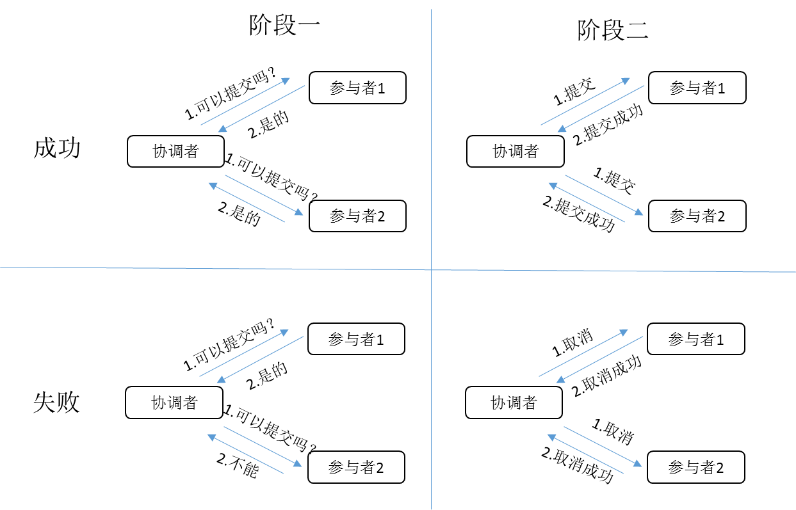
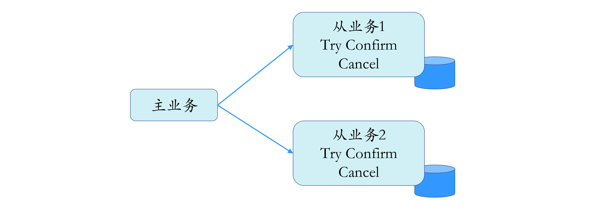
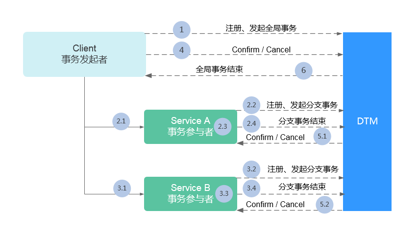

- 00 开篇词 四纵四横，带你透彻理解分布式技术.md.html
- 01 分布式缘何而起：从单兵，到游击队，到集团军.md.html
- 02 分布式系统的指标：啥是分布式的三围.md.html
- 03 分布式互斥：有你没我，有我没你.md.html
- 04 分布式选举：国不可一日无君.md.html
- 05 分布式共识：存异求同.md.html
- 06 分布式事务：All or nothing.md.html
- 07 分布式锁：关键重地，非请勿入.md.html
- 08 分布式技术是如何引爆人工智能的？.md.html
- 09 分布式体系结构之集中式结构：一人在上，万人在下.md.html
- 10 分布式体系结构之非集中式结构：众生平等.md.html
- 11 分布式调度架构之单体调度：物质文明、精神文明一手抓.md.html
- 12 分布式调度架构之两层调度：物质文明、精神文明两手抓.md.html
- 13 分布式调度架构之共享状态调度：物质文明、精神文明多手协商抓.md.html
- 14 答疑篇：分布式事务与分布式锁相关问题.md.html
- 15 分布式计算模式之MR：一门同流合污的艺术.md.html
- 16 分布式计算模式之Stream：一门背锅的艺术.md.html
- 17 分布式计算模式之Actor：一门甩锅的艺术.md.html
- 18 分布式计算模式之流水线：你方唱罢我登场.md.html
- 19 分布式通信之远程调用：我是你的千里眼.md.html
- 20 分布式通信之发布订阅：送货上门.md.html
- 21 分布式通信之消息队列：货物自取.md.html
- 22 答疑篇：分布式体系架构与分布式计算相关问题.md.html
- 23 CAP理论：这顶帽子我不想要.md.html
- 24 分布式数据存储系统之三要素：顾客、导购与货架.md.html
- 25 数据分布方式之哈希与一致性哈希：“掐指一算”与“掐指两算”的事.md.html
- 26 分布式数据复制技术：分身有术.md.html
- 27 分布式数据之缓存技术：“身手钥钱”随身带.md.html
- 28 分布式高可靠之负载均衡：不患寡，而患不均.md.html
- 29 分布式高可靠之流量控制：大禹治水，在疏不在堵.md.html
- 30 分布式高可用之故障隔离：当断不断，反受其乱.md.html
- 31 分布式高可用之故障恢复：知错能改，善莫大焉.md.html
- 32 答疑篇：如何判断并解决网络分区问题？.md.html
- 33 知识串联：以购买火车票的流程串联分布式核心技术.md.html
- 34 搭建一个分布式实验环境：纸上得来终觉浅，绝知此事要躬行.md.html
- 特别放送 Jackey：寄语天涯客，轻寒底用愁.md.html
- 特别放送 分布式下的一致性杂谈.md.html
- 特别放送 崔新：追根溯源，拨开云雾见青天.md.html
- 特别放送 徐志强：学习这件事儿，不到长城非好汉.md.html
- 特别放送 那些你不能错过的分布式系统论文.md.html
- 结束语 为什么说提升职业竞争力要从尊重、诚实开始？.md.html
- 捐赠
特别放送 分布式下的一致性杂谈
你好，我是聂鹏程。
我们常说：“众人齐心，其利断金。”其实说的就是团结一致的重要性。一致性对一个团队如此重要，对于一个分布式系统又何尝不是呢？人心散了，团队会不好带。分布式系统中出现不一致了，也会带来各种各样的问题，甚至导致业务不可用。
我在第23讲“CAP理论：这顶帽子我不想要”时，就解释了分布式系统中一致性和可用性，就像是鱼与熊掌，不可兼得。因此，多年来，在不同场景下，保证一致性的同时尽可能提高可用性，或者保证可用性的同时尽可能提高一致性，成为了众多学术界、工业界仁人志士们研究的课题以及努力的方向。正可谓，分布式技术如此多娇，分布式一致性引无数英雄竞折腰。
今天，我特地邀请到我的朋友王启军，来与你分享他对分布式一致性的解读、思考和实践。
王启军，华为云PaaS团队资深架构师，负责 Java和Go微服务框架。他曾任当当网架构师，主导电商平台架构设计；曾就职于搜狐，负责手机微博的研发；著有《持续演进的Cloud Native》。
话不多说，我们来看看王启军的分享吧。
你好，我是王启军。今天，我来和你聊聊分布式下的一致性。
以前面试别人的时候，我经常会用一些开放性的问题来考察对方的能力。比如我最爱的一个问题是，“如果给你一份数据，要求支撑大规模的并发读写，同时具备横向扩展能力，你该如何拆分、如何同步数据呢？”
此时，候选人想到的通常是复制数据到多台服务器，以提升读的性能；然后对数据进行分区，分布到不同的服务器，以解决写的瓶颈。
如果到了这里，接下来我会问他怎么同步数据，一次性写多条数据，怎么保证多台服务器的一致性呢？如果数据同步存在延迟，怎么保证写后一定能读到呢？
这次追问之后，大部分候选人就会卡住。不知道你在面试的时候有没有遇到过类似的问题，今天我就想和你聊聊这个话题。
一致性的分类
业界对一致性的定义有很多种，比如CAP理论中的一致性和ACID中的一致性，描述的就不太一样，不能一概而论。所以，在讨论之前，你最好弄清楚一致性的分类。
为了便于理解，业界通常会把一致性笼统地分为如下三类：
- 弱一致性（Weak）：写入数据A成功后，在数据副本上可能读出来，也可能读不出来，不能保证多长时间之后每个副本的数据一定是一致的。
- 最终一致性（Eventually）：写入数据A成功后，在其他副本有可能读不到A的最新值，但在某个时间窗口之后保证最终能读到。最终一致性可以看作弱一致性的一个特例，这里的重点是“时间窗口”。在读多写少的场景中，例如CDN，读写比非常悬殊，如果网站的运营人员修改了一张图片，最终用户延迟一段时间看到这个更新实际上问题不大。我们把这种一致性归结为最终一致性，指的就是，如果更新的时间间隔比较长，那么所有的副本能够最终达到一致性。
- 强一致性（Strong）：数据A一旦写入成功，在任意副本任意时刻都能读到A的最新值。
但实际上，这种分类并不能描述清楚，弱一致性在生产环境中基本没什么应用场景，最终一致性范围太宽泛，可能会存在多种不同强度的一致性。
相对来说，我更喜欢另外一种对一致性的分类方法，一致性模型主要从以下两个角度去分类：
- 以数据为中心的一致性模型。从数据的角度来观察，全局考虑，比如从数据库的角度来看，北京和南京的数据是否一致。
- 以客户为中心的一致性模型。从用户的角度来观察，比如我购买了一个商品，存到了北京的数据中心，另外一个人购买了一个商品，存到了南京的数据中心，两个买家之间没有任何关系，无需保持一致，只要是跟我有关系的数据保证一致就行了。
这两种一致性模型，又可以细分为很多类。接下来，我们就一起看看吧。
以数据为中心的一致性模型，又可以分为：严格一致性（Strict Consistency）、顺序一致性（Sequential Consistency）、因果一致性（Causal Consistency）、FIFO一致性（FIFO Consistency）、弱一致性（Weak Consistency）、释放一致性（Release Consistency）和入口一致性（Entry Consistency）。
限于篇幅，我不会详细介绍每一种一致性的定义，只和你说明几个常用的。
严格一致性，要求任何写操作都能立刻同步到其他所有进程，任何读操作都能读取到最新的修改。要实现这一点，要求存在一个全局时钟，也就是说每台服务器的时间都完全一致，但在分布式场景下很难做到。所以，严格一致性在实际生产环境中目前无法实现。
既然全局时钟导致严格一致性很难实现，顺序一致性放弃了全局时钟的约束，改为分布式逻辑时钟实现。分布式逻辑时钟可以理解为一个分布式ID。
顺序一致性是指，所有的进程以相同的顺序看到所有的修改。读操作未必能及时得到此前其他进程对同一数据的写更新，但是每个进程读到的该数据的不同值的顺序是一致的。举个例子，你在手机和PC上看到的聊天室的顺序是一致的吗？如果是一致的，那就代表满足顺序一致性，即使理论上某些先发的消息排在后发的消息后面了，也是满足的。
因果一致性是一种弱化的顺序一致性，所有进程必须以相同的顺序看到具有潜在因果关系的写操作，不同进程可以以不同的顺序看到并发的写操作。举个例子，在聊天室你看到有人问你：“你吃饭了吗？”，你回答：“我吃过了。”，你是因为看到了问题所以才触发了回答，所以这两条消息之间就存在因果关系，原因必须排在前面。
以用户为中心的一致性模型，包括4类：
- 单调读一致性（Monotonic-read Consistency）；
- 单调写一致性（Monotonic-write Consistency）；
- 写后读一致性（Read-your-writes Consistency）；
- 读后写一致性（Writes-follow-reads Consistency）。
单调读一致性是指，如果一个进程读取数据项a的值，那么该进程对a执行的任何后续读操作，总是得到第一次读取的那个值或更新的值。这个比较容易理解，说白了，就是不能读到新数据后，再读到比这个数据还旧的数据；如果没读到新数据，一直读的还是旧数据，单调读一致性并不关心这个问题。
单调写一致性是指，一个进程对数据项a执行的写操作，必须在该进程对a执行任何后续写操作前完成。这个很容易满足，注意这里是一个进程，所有的写操作都是顺序的。
写后读一致性是指，一个进程对数据项a执行一次写操作的结果，总是会被该进程对a执行的后续读操作看见。这个比较常见，比如数据库采用Master-Slave结构部署时，写完Master数据库，如果从Slave读取，有可能读不到，就不满足写后读一致性了。
读后写一致性是指，同一进程对数据项a执行的读操作之后的写操作，保证发生在与a读取值相同或比其更新的值上。这个问题经常出现的场景是，如果数据存储了多个副本，因为没有及时同步，在第一个副本上读了数据，去第二个副本上写，出现不一致的情况。
如何满足一致性需求？
当单个存储承受不住压力的时候，在读多写少的情况下，我们自然会想到使用主从的方式。为了保证写的一致性，通常只在主节点写，然后主从之间通过状态机（Replicated State Machine）的方式同步数据。
可以简单地理解为，主从都有相同的初始状态，在主上执行的所有命令，都同步一份相同顺序的命令到从，这样就可以保证最终数据也相同。
比如MySQL，就可以采用一个Master，多个Slave的方式，所有的写都在Master上更新，所有的读都在Slave上进行，但这里存在一个问题，就是怎么保证写后读一致性？答案就是，写后读都在Master上进行。注意，并不是所有的读都作用在Master，而只对写后读一致性有要求的场景才在Master上读。
当然，这样Master的压力可能还是会很大。回到问题本身，之所以满足不了写后读一致性，原因是主从之间存在延迟。那么，我们完全可以设定一个大于延迟时间的阈值，小于阈值并且要求写后读一致性的操作作用在Master上，其他所有的读都作用在Slave上。
还有一个问题就是，当主挂掉的时候，为了保证可用性，通常要将其中一个从提升为主，这里面就会涉及很多问题，到底选择哪个从作为主节点？发生网络分区的时候，如何避免脑裂？如果旧的主节点又恢复了，如何协调？
关于这些问题如何解决，你可以参考Etcd和ZooKeeper的实现方案。
Quorum机制（NWR模型）
主从机制要求写必须在主上进行，那能不能让写在所有节点上都可以进行呢？当然可以，不过这已经不是主从模式了。
回到前面的问题，如果同时写三份数据，如何保证一定能够读取到最新的数据呢？简单来说就是利用版本号，假设一共三个节点，每次写数据的同时，我都会记录这条数据对应的版本号，读数据的时候读所有的节点，然后跟版本号进行对比，版本最新的就是最终数据。实际上这就是Quorum机制的原理，也可以叫作NWR模型。
简单来说，Quorum机制就是要满足公式W+R > N。其中，W表示必须至少写入成功的节点数，R表示至少读取成功的节点数，N表示总节点数。这个公式把选择权交给了业务用户，让用户来做出最终决策。
假设现在一共有三个节点，为了满足这个公式：
- 如果我写数据的时候写入三个节点都成功才返回，那我读取的时候只要读取其中任意一个节点就可以得到最新的数据。
- 如果我写数据的时候写入两个节点成功就返回，那我读取的时候只要读取其中任意两个节点就可以得到至少一份最新的数据。
- 如果我写数据的时候写入一个节点成功就返回，那我读取的时候必须读取所有节点才可以得到至少一份最新的数据。
这里还存在另外一个问题，那就是，如果写的时候只写入一个节点就返回，当存在并发操作时，版本会存在冲突，也就是说，如果初始版本为1，两个进程分别对其中两个节点写数据，两个节点版本号都变成了1，数据却不一样，这个问题如何解决呢？
这，就要求我们写数据的时候最好是遵循W>N/2，也就是说，写的时候最好大于总节点数的一半，在写的过程中进行冲突检测，而不是在读的时候检测。
N阶段提交
还有一种比较经典的做法，常用在数据库中，那就是N阶段提交。这里的N有一阶段、两阶段、三阶段，其中两阶段用得最多。
这里我必须首先说明一下，两阶段提交不等于XA协议，两阶段提交是一种模式，ZooKeeper中提交事务的过程实际上也类似于两阶段提交，Google的分布式事务Percolator也是基于两阶段提交，而XA只是一种协议。它是由X/Open国际联盟提出的X/Open Distributed Transaction Processing（DTP）模型，简称XA协议。

顾名思义，两阶段提交的整个过程分为两个阶段，第一阶段询问是否可以提交，锁定数据，如果所有节点都返回可以提交，第二阶段提交，否则第二阶段回滚。基于XA的两阶段提交就是这种流程，这种方式常用于同时更新两个数据库的场景，一般常用的关系型数据库都支持这个协议。
由于第一阶段要给数据库加锁，否则会出现不一致的情况，这就会带来很多问题，XA被诟病的大部分原因都跟这个锁有关。例如，加锁后，协调者挂掉怎么办？加锁后，性能大幅下降如何处理？
为了解决死锁的问题，可以将加锁的时间缩短，降低死锁的概率，这就是三阶段提交。也就是说把第一阶段分为两个部分，询问是否可以提交，回复可以提交的时候，并不加锁，当所有节点都回复可以的时候，协调者再发一次加锁的请求。但这样的话，系统会变得更复杂。
当然，两阶段提交并不是只有XA协议，TCC也可以看成是一种两阶段提交协议，TCC是Try-Confirm-Cancel的缩写。相对于两阶段提交事务机制，它的特征在于不依赖于数据库的协议，数据库不需要锁定数据，事务过程由业务服务来实现，这样也就不会出现死锁的问题，性能也会高很多。还有一点容易被忽略，这种做法降低了数据库的压力。

当然，世界上没有免费的午餐，TCC事务机制也有不好的地方：
- 导致业务变得更复杂，数据库需要增加字段表示状态；
- 需要增加相应接口实现Confirm和Cancel方法；
- 业务要自己保证每个方法的幂等，因为这里可能涉及到失败重试的问题。
而一阶段提交，就是没有询问是否可以提交的过程，直接提交，任意一个节点提交失败，就进行重试或者回滚。这种方案对业务的侵入性很大，需要对业务提供一个回滚操作。
实践案例
接下来，我就以在华为云的工作场景为例，来给你串下整体的思路吧。
华为云目前的分布式框架采用TCC的模式，将协调者从业务中抽离，独立为一个服务。主业务发起事务，获得全局事务ID，调用分支业务时将全局事务ID通过Header传递过去，分支业务根据全局事务ID申请分支事务ID，所有的状态都会存储到分布式事务服务端，服务端根据执行情况进行全局协调。
事务执行的大概步骤，如下所示。

- 步骤1：进入到发起全局事务的方法内时，会先向DTM集群申请注册一个全局事务ID（Global Transaction ID），只有申请成功才可继续后续流程。
- 步骤2.1：事务发起者将申请到的全局事务ID透传到所调用的事务参与者中。
- 步骤2.2：事务参与者利用得到的全局事务ID，向DTM集群注册申请一个分支事务ID（Branch Transaction ID），只有申请成功才可继续此事务参与者的后续流程。
- 步骤2.3：事务参与者完成自身业务逻辑（即完成TCC中的Try阶段）。
- 步骤2.4：事务参与者将自身业务逻辑结果上传到DTM集群，并示意分支事务结束。
- 步骤3.1~3.4：与2.1~2.4类似，完成剩余事务参与者的业务逻辑。
- 步骤4：事务发起者发起TCC二阶段。
- 步骤5.1：DTM集群根据全局事务ID，找到事务参与者，发起TCC二阶段。
- 步骤5.2：与5.1类似，完成剩余事务参与者的TCC二阶段。
- 步骤6：DTM集群通告事务发起者全局事务结束。
什么时候开始考虑一致性？
在分布式领域，一致性是个永恒的话题，因为在大多数场景下，出于成本考虑，通常会选择性地忽略或者降低对一致性的要求。但是，当系统达到一定规模的时候，不一致的概率就会大大增加，比如原本不一致的概率可能是一万年一次，如果数据量提升一万倍，那可能是一年一次。但，无论发生的概率是多少，研发成本都是一样的，这时候实现更强的一致性就非常有必要了。
凡是涉及钱的系统，对一致性的要求必然很高，除此之外，大多数场景实际上对一致性的要求并没有那么高，比如用户登录时给用户加一个积分，加积分这个操作并没有那么重要，延迟几秒影响也不大，那完全可以做成异步的，保证最终一致性就可以了。
有没有什么学习材料？
如果要推荐学习资料的话，我建议你可以多去看看分布式领域的论文，特别是大神莱斯利 · 兰波特（Leslie Lamport）的，以及Google、Amazon等硅谷著名企业发布的论文。比如，下面这两篇，我就非常推荐你去读一读，因为很多数据库的分布式事务都是参考了它们 。
- Percolator的论文，可以认为是Spanner的类似实现，TiDB的实现也是根据此论文得出。
- DynamoDB的论文，Dynamo: Amazon’s Highly Available Key-value Store。
另外，你还可以看一些开源框架的实现，比如Cassandra、Kafka等，这些代码对于你理解分布式一致性会有非常大的帮助。
总结
我来简单和你总结一下今天的主要内容吧。
首先，要搞明白分布式一致性，我们就要从其分类开始，除了弱一致性、强一致性、最终一致性这种分类方式外，还有一种更好的分类方式，就是以数据为中心和以用户为中心的一致性分类。
其次，如果要满足一致性的需求，有很多种方案，这里我们介绍了两种最常用的方案，Quorum机制和N阶段提交，并通过华为云的一个实践案例来加深你对一致性的理解。
最后，在分布式领域，一致性是目前为止解决得最不好的一个领域，也是最复杂的一个领域，解决方案五花八门，我只是与你介绍了其中的一部分内容，如果你要继续学习，可以多阅读一些论文和开源框架的代码。
© 2019 - 2023 Liangliang Lee. Powered by gin and hexo-theme-book.